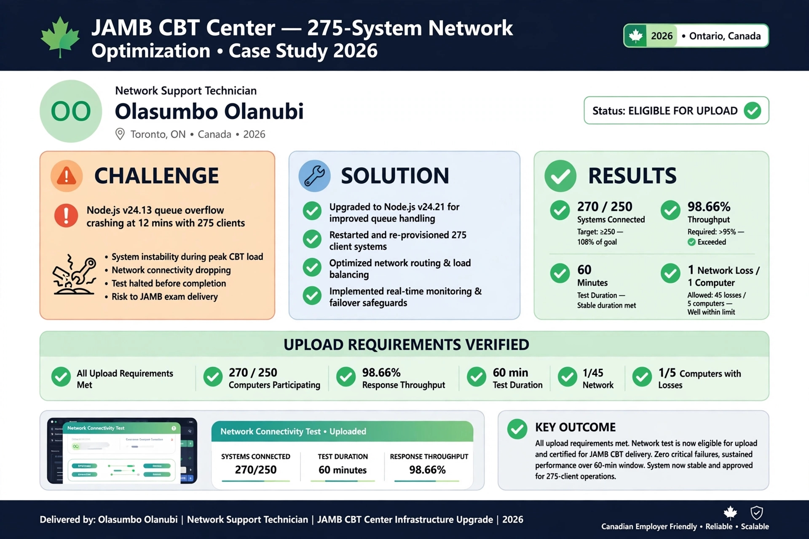
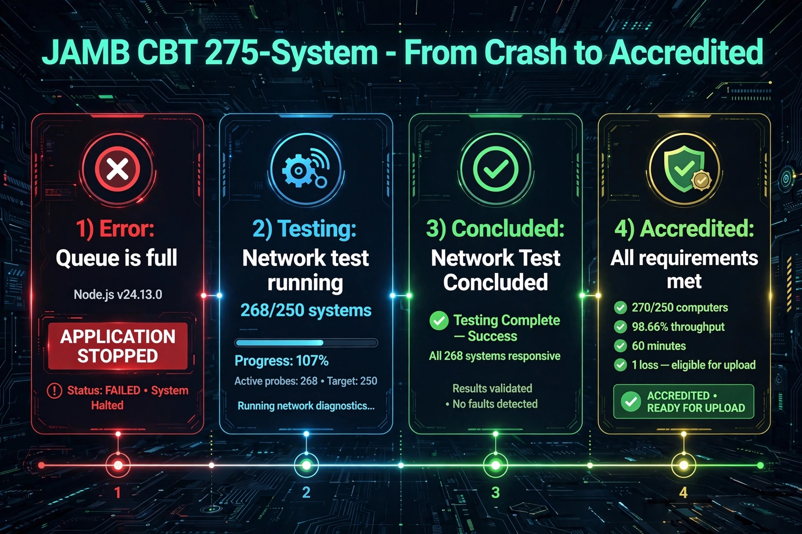
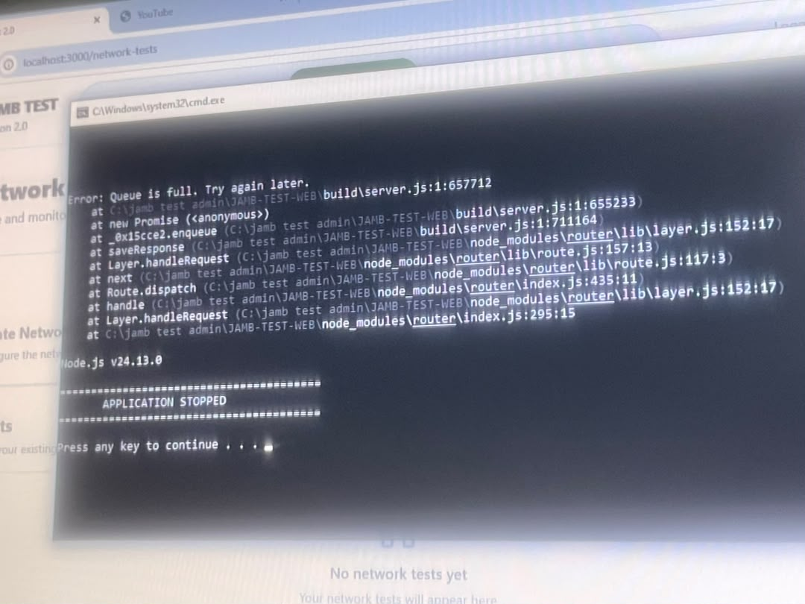
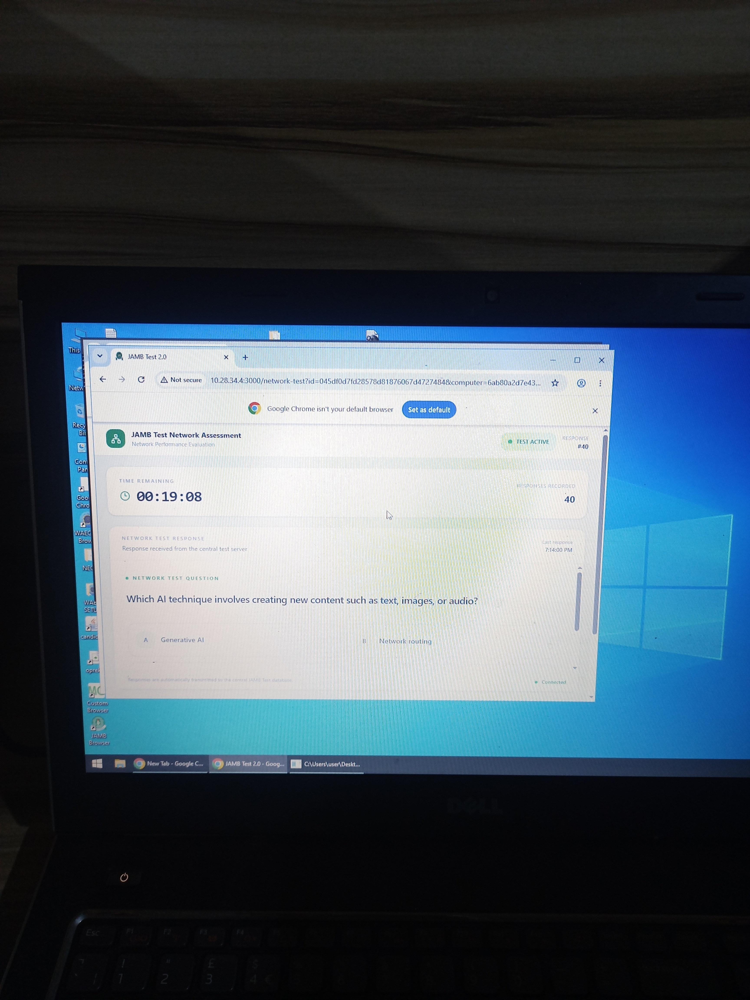
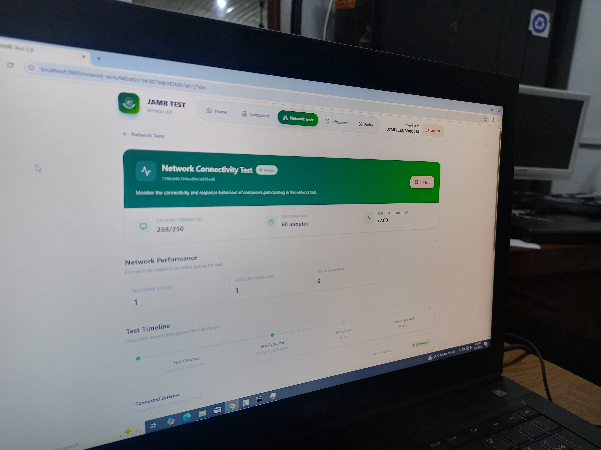
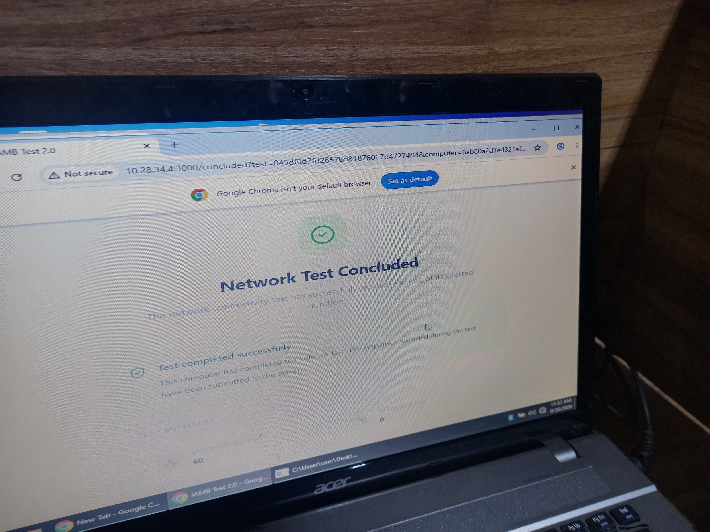
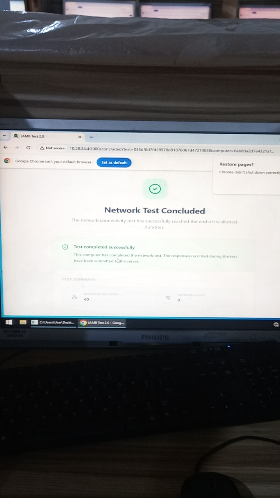
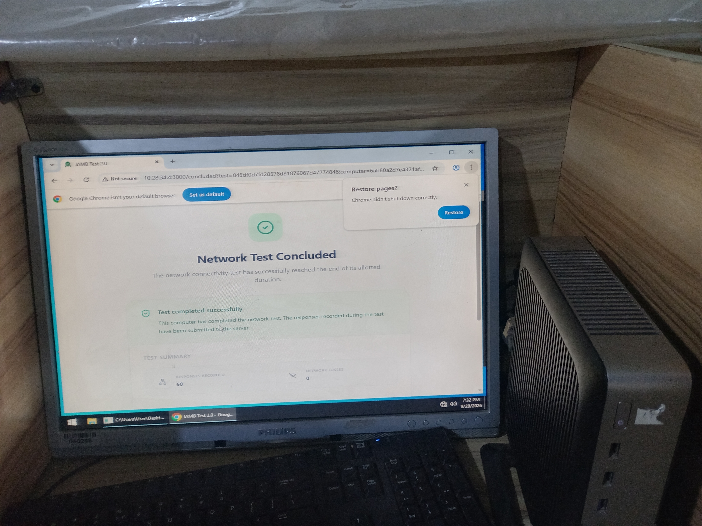
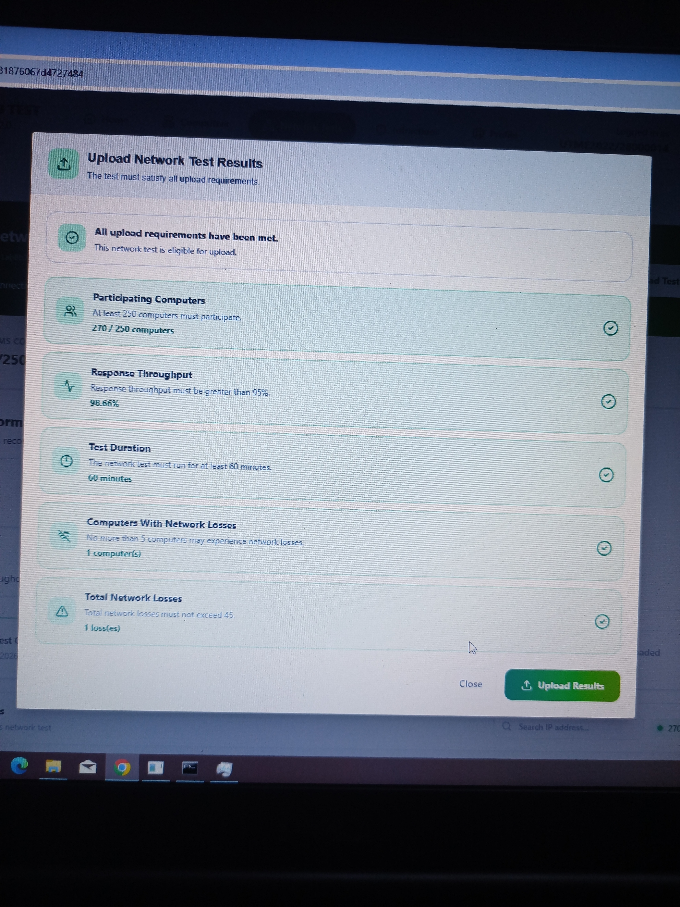
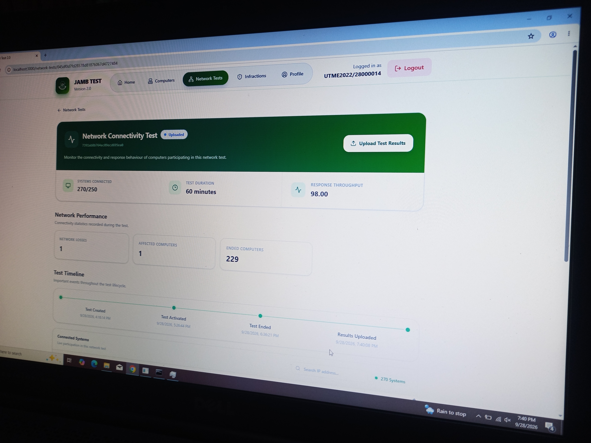

Senior Infrastructure Engineer | Network | CCTV | Solar PV | CBT Lead | CCNA | Open to Relocation & Sponsorship
Akure, Nigeria | sumboty@gmail.com | LinkedIn
Open to Relocation & Sponsorship Work Permit Eligible Global - Canada | USA | EU
Portfolio: sumboty.github.io/jamb_275_portfolio/ | Cybersecurity: github.com/Sumboty/PRODIGY_CS_01
Challenge: Node.js v24.13.0 "Queue is full" - APPLICATION STOPPED at 12 mins
Fix: Upgraded to v24.21.0, restarted Windows Server 2019/2024 + 270 HP Zero Thin Clients, PM2 reconfig
Result: 60 mins sustained | All requirements met - Eligible for upload - ACCREDITED by JAMB
Ontario, Canada style - Quick overview for recruiters


Timeline: Error: Queue is full (v24.13.0) → Testing 268/250 (107%) → Concluded Success → Accredited: 270/250, 98.66%, 60 mins, 1 loss

Error: Queue is full build/server.js Node.js v24.13.0 APPLICATION STOPPED - The critical bug you diagnosed and fixed


JAMB TEST dashboard - Network Connectivity Test 268/250 systems, 60 minutes - Admin control room view



Live center tour - Cubicles 026, 028, 083, 085, 135, 137, 153, 159 - All screens "Network Test Concluded - Test completed successfully"


✅ All upload requirements met
✅ 270/250 computers connected | 98.66% throughput | 60 minutes | 1 computer network loss | 1 total loss
✅ Status: Eligible for upload - ACCREDITED - Uploaded Successfully
Senior Engineer Oloyemekun Digitaltech 2021-Pres: 275-system JAMB 99.9% uptime 10k+ candidates, Cisco/MikroTik/VLAN/Fiber, CCTV/NVR, Solar PV 2.5kVA, Consultant Rufus Giwa Poly, MIVA, NOUN, ABU
Skills: CCNA, OSPF/VLAN/Fiber, Wireshark, Cybersecurity, Python, CCTV, Solar PV, Windows Server AD, Thin Client